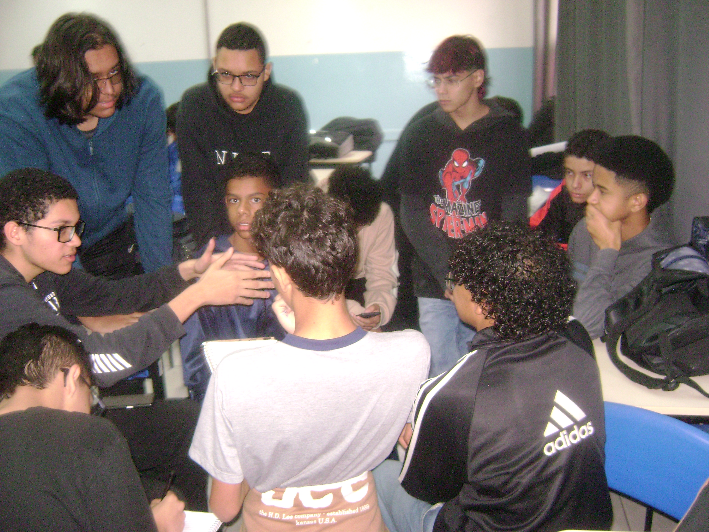
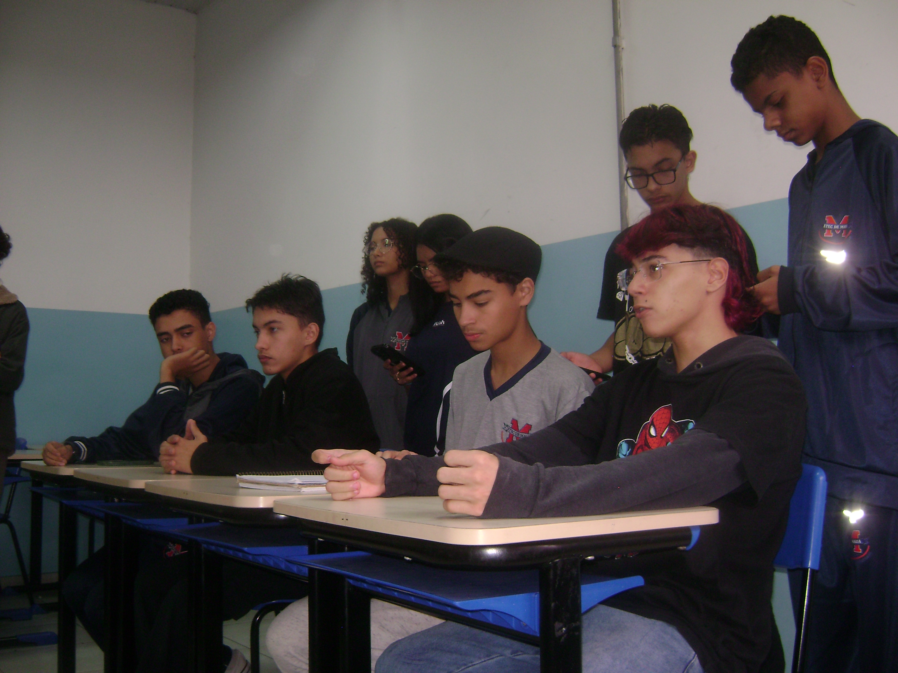
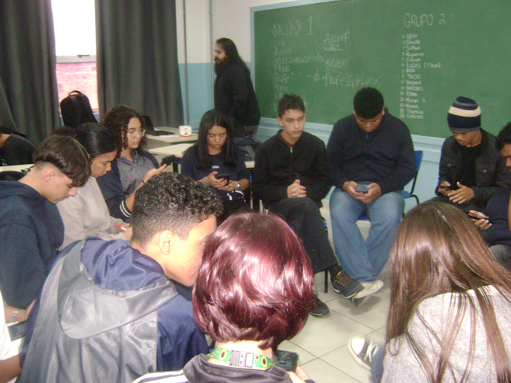
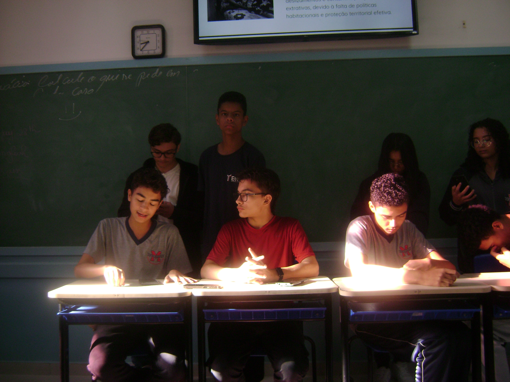

Atividade realizada em dois encontros discutiu se os desastres ambientais foram uma consequência inevitável do sistema de extração mineral brasileiro.
As tragédias de Mariana e Brumadinho continuam sendo tema de discussões no Brasil mesmo depois de anos após os rompimentos das barragens, e foi com a finalidade de estimular o pensamento crítico dos alunos que o professor de Geografia Lucas Pauli promoveu um debate em sala de aula, realizado nos dias 22 e 29 de maio. A atividade consistiu na divisão da turma em dois grupos com posicionamentos opostos a respeito da mineração, ambos tendo como principal foco os desastres ocorridos em Minas Gerais e a seguinte questão: se essas tragédias foram uma consequência inevitável do sistema de extração mineral brasileiro. Os grupos contavam com debatedores e pesquisadores responsáveis por auxiliar nos argumentos apresentados, enquanto o professor e dois representantes da mídia, McLovin e Prefeito realizavam perguntas aos membros dos grupos. Além disso, os estudantes tiveram direito a réplica e tréplica, e o público também pôde participar por meio de perguntas diretas aos debatedores. "Mariana e Brumadinho marcaram a história do Brasil com tragédias ambientais que geram debates até os dias atuais. E em uma atividade de Geografia, estudantes realizaram um debate orientado para discutir uma questão muito importante: se os desastres foram uma consequência inevitável do sistema de extração mineral brasileiro", destacou o jornalista McLovin.

Representando o Grupo 1 durante o primeiro dia do debate estavam os alunos Vitor Reis e Intercâmbio, enquanto no segundo dia, Intercâmbio retornou ao debate junto de Vinicius. A equipe que defendia a importância da mineração para a economia e para o desenvolvimento do país, contou ainda com pesquisadores responsáveis por reunir dados e informações para sustentar os argumentos apresentados durante o debate, respondendo aos questionamentos feitos pelos entrevistadores e pelo público presente.

Já o Grupo 2, representado por Alex e Trada no primeiro dia e por Trada e Miquéias no segundo, defendeu a necessidade de uma profunda reforma do sistema de mineração brasileiro, argumentando que as tragédias de Mariana e Brumadinho evidenciaram falhas estruturais na fiscalização, na gestão das barragens e na atuação das empresas desse setor. Assim como o grupo rival, os integrantes também contaram com pesquisadores e participaram das etapas de réplica e tréplica, permitindo que diferentes perspectivas sobre o tema fossem confrontadas ao longo dos dois dias de debate.

Os desastres que serviram de base para o debate ocorreram nos municípios de Mariana em 2015, e Brumadinho em 2019, ambos envolvendo o rompimento de barragens destinadas ao armazenamento de rejeitos de atividade mineral e sendo considerados marcos na história do Brasil. No caso de Mariana, o rompimento da barragem de Fundão, pertencente à Samarco, liberou mais de 39 milhões de metros cúbicos de rejeitos, formando uma onda de lama que destruiu o distrito de Bento Rodrigues, afetou dezenas de municípios e percorreu mais de 600 quilômetros pela bacia do Rio Doce até alcançar o Oceano Atlântico. O episódio provocou a morte de 19 pessoas e gerou impactos ambientais, sociais e econômicos que ainda permeiam pelas comunidades atingidas. Quatro anos depois em Brumadinho, o rompimento da barragem da Mina Córrego do Feijão operada pela empresa Vale, resultou em uma tragédia ainda mais intensa: aproximadamente 270 pessoas morreram quando milhões de metros cúbicos de rejeitos atingiram instalações da própria empresa e áreas próximas ao rio Paraopeba. A dimensão dos dois desastres colocou em xeque questões relacionadas a fiscalização do setor mineral, aos métodos de construção e monitoramento das barragens e a responsabilidade das empresas envolvidas, transformando Mariana e Brumadinho em símbolos de um debate que continua mobilizando especialistas e a sociedade brasileira sobre os limites e os riscos do atual modelo de exploração mineral.

Mesmo passados vários anos desde os acontecimentos, os episódios de Mariana e Brumadinho continuam sendo motivo de estudos e debates em diferentes áreas, evidenciando a complexidade da relação entre desenvolvimento econômico, exploração de recursos naturais e preservação ambiental. A dinâmica proposta buscou proporcionar esse espaço de reflexão, assim permitindo que os alunos analisassem diferentes pontos de vista sobre um tema que ainda gera questionamentos na sociedade brasileira.